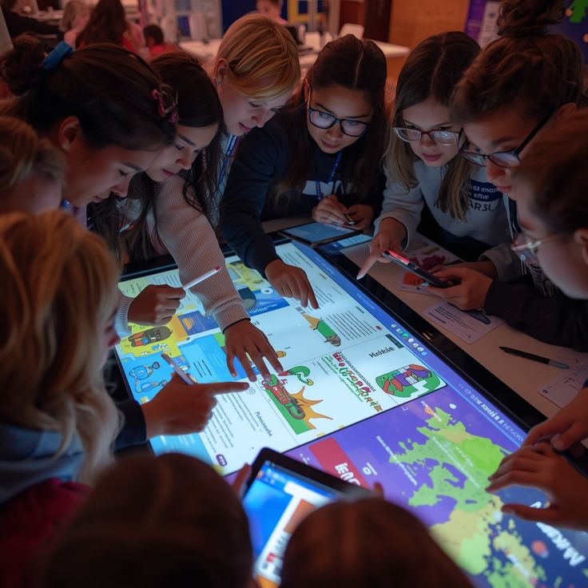

What If Teachers Could See
What Students Never Say?
The hidden intelligence layer transforming modern classrooms. A deep look at how AI is finally making the invisible side of learning visible.
Every teacher has faced the same challenge. A classroom full of students. A lesson carefully prepared. Concepts explained. Questions answered. Assignments completed. Everything appears normal.
But beneath the surface, an entirely different classroom exists. One student is struggling to understand the concept but is too afraid to ask. Another is overwhelmed by pressure and anxiety. A third has mentally checked out of the lesson. A fourth already understands everything and is becoming disengaged. The teacher cannot see any of it. Not because they lack experience. Not because they lack dedication. But because some of the most important signals in learning are invisible. And for centuries, education has been forced to operate without them.
The Problem
The Invisible Side of Learning
Every teacher has faced the same challenge. A classroom full of students. A lesson carefully prepared. Concepts explained. Questions answered. Assignments completed. Everything appears normal.
But beneath the surface, an entirely different classroom exists. One student is struggling to understand the concept but is too afraid to ask. Another is overwhelmed by pressure and anxiety. A third has mentally checked out of the lesson. A fourth already understands everything and is becoming disengaged.
The teacher cannot see any of it. Not because they lack experience. Not because they lack dedication. But because some of the most important signals in learning are invisible. And for centuries, education has been forced to operate without them.
"A student rarely says: I am losing confidence. I don't understand this. I have stopped paying attention."

Confusion
Students rarely ask for help. Confusion builds silently until it becomes a gap no test can ignore.
Stress and Anxiety
Emotional pressure shapes how students absorb information. Invisible to the naked eye, critical to outcomes.
Disengagement
When a learner mentally leaves the room, the teacher often discovers it too late to turn it around.
Cognitive Overload
Too much, too fast. A student's capacity to process can silently collapse mid-lesson without a single signal.
The problem is not teaching. The problem is visibility.
The Solution
What If Classrooms Could Understand Students?
Imagine a classroom supported by an invisible intelligence layer. Not replacing teachers. Supporting them. An intelligent system capable of observing patterns that would otherwise go unnoticed.
While students learn, the system continuously analyzes attention levels, confidence levels, participation patterns, learning engagement, conceptual understanding, and emotional indicators.
Not to judge students. Not to monitor them. But to understand them. For the first time, the classroom gains awareness of the learning experience itself.
Personalization at Scale
One Lesson. Forty Different Journeys.
Every student experiences the same lesson differently. A teacher may explain a concept once. Yet forty students may interpret it in forty different ways. One student needs reassurance. Another needs additional explanation. Another needs a practical example. Another needs a challenge.
Traditional education attempts to deliver a single experience to everyone. The future classroom does something different. It personalizes support without increasing teacher workload. While the educator continues teaching, intelligent agents identify individual learning needs and create targeted interventions.
A confused learner receives clarification. A disengaged learner receives renewed engagement. An anxious learner receives support. An advanced learner receives greater challenge. The teacher teaches one lesson. The system creates forty learning journeys.
The Teacher's Edge
The Teacher Gains Superpowers
Whenever artificial intelligence enters education, a familiar question emerges: will AI replace teachers? The better question is: what happens when teachers gain capabilities they never had before?
Imagine understanding the emotional and cognitive state of every learner in the room. Imagine knowing which concepts are causing difficulty before students admit it. Imagine recognizing confidence loss before grades decline.
The teacher remains at the center of the classroom. The difference is that they are no longer working alone. They are supported by intelligence. The teacher does not lose authority. The teacher gains superpowers.
See the Unseen
Detect confusion before it becomes a gap in understanding.
Pinpoint Intervention
Know exactly which student needs support and when.
Anticipate Decline
Identify stress before performance suffers.
Predict Disengagement
Address withdrawal before a learner gives up entirely.
The Future
The Classroom Becomes an Ecosystem
For generations, classrooms have been designed around content delivery. A teacher teaches. Students listen. Knowledge is transferred.
The future classroom operates differently. It becomes an intelligent ecosystem. A living environment capable of continuously understanding how students learn, think, engage, and grow. The focus shifts from delivering information to developing human potential.
The most transformative technologies eventually disappear into the background. Electricity powers buildings without demanding attention. The internet connects billions without being visible. The next educational revolution will follow the same path. An invisible intelligence layer operating quietly beneath the surface.
The most important transformation in education is not teaching students differently. It is finally seeing them clearly.